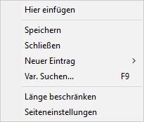
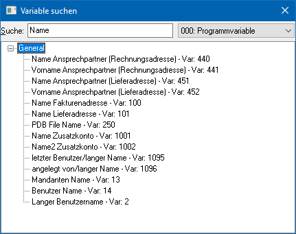
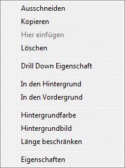
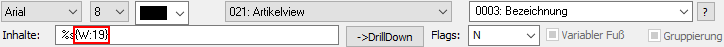
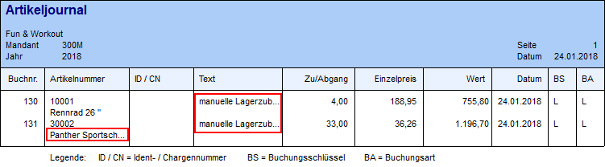

Wenn ein Formular bearbeitet wird, gibt es zwei unterschiedliche Kontextmenüs, die beim Drücken der rechten Maustaste angezeigt werden (weiterführende Informationen entnehmen Sie bitte dem Kapitel "Buttons und Funktionen im Detail"):
Kein Element markiert

Ø Hier einfügen
Diese Option steht nur dann zur Verfügung, wenn zuvor ein oder mehrere Elemente kopiert oder ausgeschnitten wurden. Damit können diese Elemente an dieser Stelle wieder eingefügt werden.
Ø Speichern
Mit dieser Option wird das Formular gespeichert.
Ø Schließen
Mit dieser Option kann das Formular geschlossen werden. Wurden Änderungen durchgeführt, wird man gefragt, ob diese gespeichert werden sollen oder nicht.
Ø Neuer Eintrag
Damit wird ein Untermenü geöffnet, aus dem das neue Element gewählt werden kann, welches eingefügt werden soll.
Ø Var. Suchen F9
Mit dieser Option bzw. mit der F9-Taste kann nach allen Variablen gesucht werden, die im aktuellen Formular zur Verfügung stehen.

Im Feld "Suche" wird der Suchbegriff eingegeben. In der nebenstehenden Auswahlbox kann die Tabelle bzw. die View ausgewählt werden, in welcher gesucht werden soll. Die Suche erfolgt hierbei im Volltext, d.h. es werden alle Variablen angezeigt, in denen der Suchbegriff vorkommt. Alle gefunden Einträge werden in einer Baumstruktur dargestellt.
Ø Seitenaufbau
Mit dieser Option können die Seiteneinstellungen des Formulars bearbeitet werden.
Ein oder mehrere Element(e) ist / sind markiert

Ø Ausschneiden
Es werden alle markierten Elemente ausgeschnitten und in die Zwischenablage transferiert.
Ø Kopieren
Es werden alle markierten Elemente kopiert und in die Zwischenablage transferiert.
Ø Hier einfügen
Das/die zuvor kopierte(n) bzw. ausgeschnittene(n) Elemente werden an dieser Stelle eingefügt.
Ø Löschen
Alle markierten Elemente werden gelöscht.
Ø Drill Down Eigenschaft
Diese Funktion erzeugt für das gewählte Element eine Verknüpfungsfunktion (Hyperlink) zu einer weiterführenden Aktion. Das DrillDown-Element wird hierbei im Anschluss farblich gesondert dargestellt und unterstrichen.
Ø In den Hintergrund
Es wird das markierte Objekt (Variablen, Texte, Rahmen, Linien, etc.) in den Hintergrund (erste Stelle im Formular) geschoben. Wenn sich zwei Objekte übereinander befinden, so wird das markierte Objekt in den Hintergrund gestellt.
Hinweis
Mit den Optionen "In den Hintergrund" und "In den Vordergrund" wird auch die Reihenfolge der Abarbeitung der Elemente gesteuert, was z.B. im Zusammenhang mit SQL-Abfragen sehr wichtig ist.
Ø In den Vordergrund
Es wird das markierte Objekt (Variablen, Texte, Rahmen, Linien, etc.) in den Vordergrund (letzte Stelle im Formular) geschoben. Wenn sich zwei Objekte übereinander befinden, so wird das markierte Objekt in den Vordergrund gestellt.
Hinweis
Mit den Optionen "In den Hintergrund" und "In den Vordergrund" wird auch die Reihenfolge der Abarbeitung der Elemente gesteuert, was z.B. im Zusammenhang mit SQL-Abfragen sehr wichtig ist.
Ø Hintergrundfarbe
Diese Option kann nur dann ausgewählt werden, wenn ein Eintrag markiert ist. Dadurch kann einem Element eine Farbe zugeordnet werden, welche dann als Hintergrund zu diesem Element angedruckt wird. Hierfür wird bei Anwahl des Menüpunkts ein Fenster geöffnet, aus dem die gewünschte Farbe gewählt werden kann.

Ø Hintergrundbild
Diese Option kann nur dann ausgewählt werden, wenn ein Eintrag markiert ist. Dadurch kann einem Element eine Hintergrundgrafik zugeordnet werden. Hierfür wird bei Anwahl des Menüpunkts ein Fenster geöffnet, aus dem eine Grafik ausgewählt werden kann, wobei im ersten Schritt alle Grafiken aus der Datenbank angezeigt werden. Durch Anklicken des Buttons "aus Datei ..." kann eine Grafik gewählt werden, die sich nicht in der Datenbank (Systemtabellen) befindet.

Ø Länge beschränken
Mit Hilfe dieser Funktion können Elemente des Typs "numerische Variable" und "Text Variablen" so umgestellt werden, dass nur die definierte Länge am Bildschirm ausgegeben bzw. gedruckt wird. Die Definition der Länge erfolgt im Element selber über die Zuweisung einer Zahl im Beschränkungsbereich " {W:xxx}".
Wenn es bei der Ausgabe zu einer Beschränkung kommt, dann wird hierauf durch drei Punkte am Ende des gedruckten Bereichs aufmerksam gemacht.
Beispiel
Die Variable "Artikelbezeichnung" soll maximal eine Länge von 15 aufweisen. Im Formular Editor wird per rechte Maustaste die Längenbeschränkung aktiviert und das Format bzw. der Inhalt auf "15" angepasst.

Auf dem Ausdruck wird bei einer Überschreitung der definierten Länge automatisch abgeschnitten.

Ø Eigenschaften
Durch Anwahl dieses Punktes werden die Einstellungen des Elements angezeigt (welche View/Var wird angedruckt, welche Formatierungsanweisungen sind hinterlegt etc.)